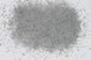

|
|
(For further information on spectroscopy, see:
http://speclab.cr.usgs.gov)
TITLE: Monticellite HS339 DESCRIPT
DOCUMENTATION_FORMAT: MINERAL
SAMPLE_ID: HS339
MINERAL_TYPE: Nesosilicate
MINERAL: Monticellite (Olivine group)
FORMULA: CaMgSiO4
FORMULA_HTML: CaMgSiO4
COLLECTION_LOCALITY: Texas
ORIGINAL_DONOR: Hunt and Salisbury Collection
CURRENT_SAMPLE_LOCATION: USGS Denver Spectroscopy Laboratory
ULTIMATE_SAMPLE_LOCATION: USGS Denver Spectroscopy Laboratory
SAMPLE_DESCRIPTION:
Forms series with Kirschsteinite.
Original spectrum published in: Hunt, G.R., J.W. Salisbury, and C.J. Lenhoff, 1973, Visible and near-infrared spectra of minerals and rocks: VI. Additional silicates. Modern Geology, v. 4, p. 85-106.
With the comment:"This sample is spectrally quite featureless except for a very weak band near 1.0µm and weak features in the visible. Although monticellite typically shows remarkably small departures from ideal composition, it is obvious that a small amount of Fe2+ has substituted for the Mg, producing both the 1µm band and the fall off toward the blue in the visible."
IMAGE_OF_SAMPLE:

END_SAMPLE_DESCRIPTION.
XRD_ANALYSIS:
40 kV - 30 mA, 6.5-9.5 keV
References: JCPDS #35-590
Found: Monticellite; weak reflections at 5.6, 2.45, 1.56, 1.42 Angstroms
Comment: Monticellite is well crystallized.
J.S.Huebner, J.Pickrell, T. Schaefer,written communication(USGS)
END_XRD_ANALYSIS.
COMPOSITIONAL_ANALYSIS_TYPE: None # XRF, EM(WDS), ICP(Trace), WChem
COMPOSITION_TRACE:
COMPOSITION_DISCUSSION:
None.
END_COMPOSITION_DISCUSSION.
MICROSCOPIC_EXAMINATION:
END_MICROSCOPIC_EXAMINATION.
SPECTROSCOPIC_DISCUSSION:
END_SPECTROSCOPIC_DISCUSSION.
SPECTRAL_PURITY: 1b2c3b4b # 1= 0.2-3, 2= 1.5-6, 3= 6-25, 4= 20-150 microns
| LIB_SPECTRA_HED: | where | Wave Range | Av_Rs_Pwr | Comment |
|---|---|---|---|---|
| LIB_SPECTRA: | splib04a r 3111 | 0.2-3.0µm | 200 | g.s.= |
| LIB_SPECTRA: | splib05a r 4498 | 0.2-3.0µm | 200 | g.s.= |
| LIB_SPECTRA: | splib06a r 14268 | g.s.= | ||
| LIB_SPECTRA: | splib06a r 14280 | g.s.= |
{kind=link}